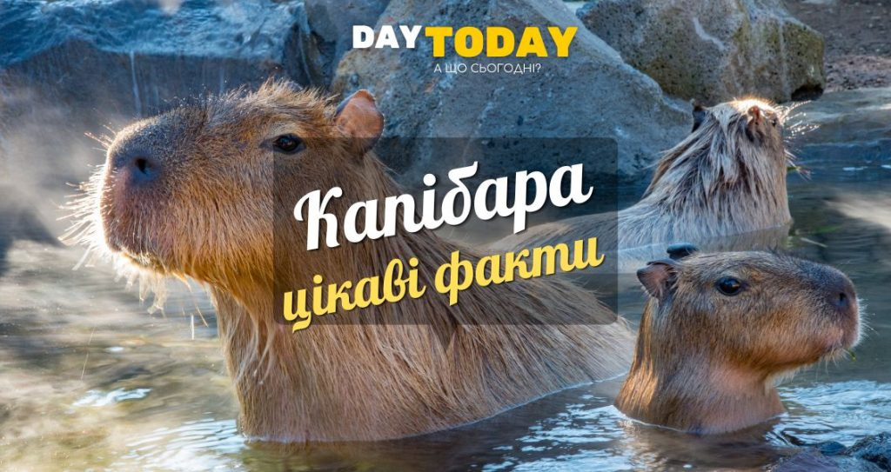

Ласкаво просимо на наш сайт!
Виберіть розділ з меню вище, щоб переглянути галерею, погоду або новини.
Цікаві факти про капібару

Капібари — смішні і милі тваринки. 10 липня ми відзначаємо День вдячності капібарі, тож дізнаймося про цих тваринок більше.
Цікаві факти про капібару
Чи може капібара бути домашньою тваринкою?
Капібара є найбільшим гризуном у світі. Дорослі капібари можуть виростати від 1,0 до 1,3 метра і важити до 66 кілограмів.
Капібара належить до родини гризунів званих Caviidae. Основні близькі родичі капібари включають гвінеїських свиней, морських свинок, а також роди Dasyprocta та Cuniculus, до яких відносяться агуті та пака. Всі ці тварини відносяться до порядку Rodentia, який є найбільш численним порядком ссавців у світі, представлений близько 40% всіх видів ссавців.
Капібари ведуть напівводний спосіб життя, і вони чудово до нього пристосувалися. Вони чудові плавці, з перетинчастими лапами для кращого руху. Вони навіть можуть спати у воді, висовуючи лише ніс, щоб дихати.
Капібари надзвичайно товариські істоти і живуть групами, які можуть налічувати до 100 особин. У соціальній структурі домінує домінантний самець, а самки та молоді самці утворюють решту групи.
Капібари – травоїдні тварини з різноманітним раціоном, що харчуються різноманітними травами і водними рослинами, а також фруктами і корою дерев.
Як і в інших гризунів, зуби капібар ніколи не припиняють рости. Вони постійно гризуть їжу, щоб зберегти зуби прийнятної довжини.
Цікаво, що капібари добре уживаються з широким спектром тварин. Нерідко можна побачити птахів, кроликів і навіть мавп, які використовують капібари як зручне місце для відпочинку.
Капібари мають багатий комунікативний репертуар, що включає в себе поєднання пахучих міток, вокалізації та фізичні контакти. Вони навіть муркочуть, коли задоволені.
Відомо, що капібари люблять валятися в багнюці, яка слугує природним сонцезахисним кремом і може допомогти утримувати на відстані шкідників, таких як кліщі та мухи.
Незважаючи на свої великі розміри, капібари мають низку природних хижаків, серед яких ягуари, анаконди, каймани, орли і люди.
Період вагітності у капібар становить близько 130-150 днів, і самка зазвичай народжує приплід з чотирьох-п’яти дитинчат.
Чи може капібара бути домашньою тваринкою?
Хоча капібари можуть утримуватися як домашні тваринки в деяких юрисдикціях, вони є великими, активними тваринами, яким потрібно багато простору і часто доступ до води для купання. Вони є соціальними створіннями і мають краще самопочуття, коли живуть у групах, що також може бути викликом для домашніх умов. Більше того, вони є гризунами, що означає, що їхні зуби постійно ростуть, і їм потрібно щось гризти, щоб знизити цей ріст.
Хоча капібари відомі своєю спокійною поведінкою і здатністю ладнати з різними видами тварин, вони потребують спеціального догляду і вирішення потреб, які можуть бути складними для багатьох власників домашніх тварин. З цих причин, вони більше підходять для проживання в природному середовищі або в зоопарках, де їх потреби можуть бути повністю задоволені.
Важливо зазначити, що в деяких країнах і регіонах тримання капібар як домашніх тварин може бути незаконним або вимагати спеціального дозволу.
Чи може капібара напасти на людину?
Капібари відомі своєю доброзичливою і миролюбною природою, і вони зазвичай не нападають на людей. Вони дуже соціальні тварини і можуть добре ладнати з різними видами, включаючи людей.
Але як і з будь-якою дикою твариною, можливість агресії може зростати, якщо тварину злякають або провокують. Також, якщо мати-капібара вважає, що її дитинчата у небезпеці, вона може стати на захист. З цієї причини, незважаючи на те, наскільки дружелюбними вони можуть здаватися, все одно, бажано триматися на відстані, і з ними повинні поводитися з повагою, щоб забезпечити безпеку і добробут всіх сторін.